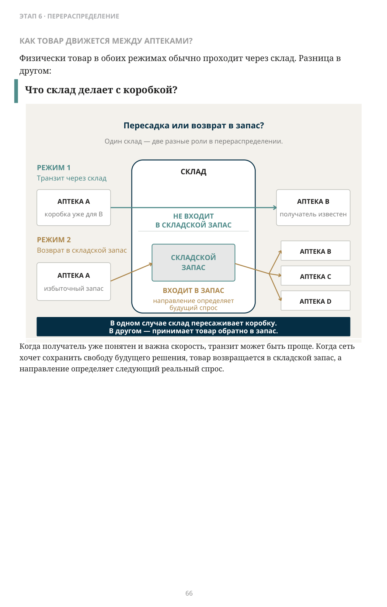
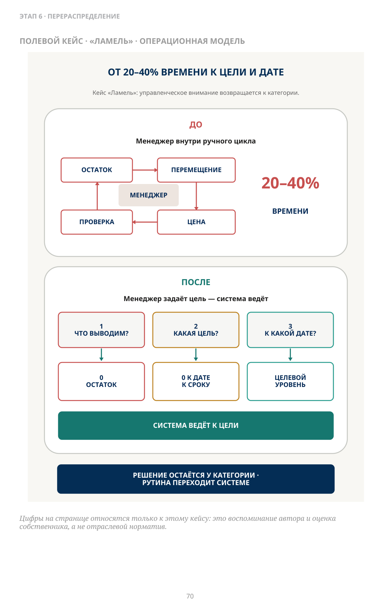
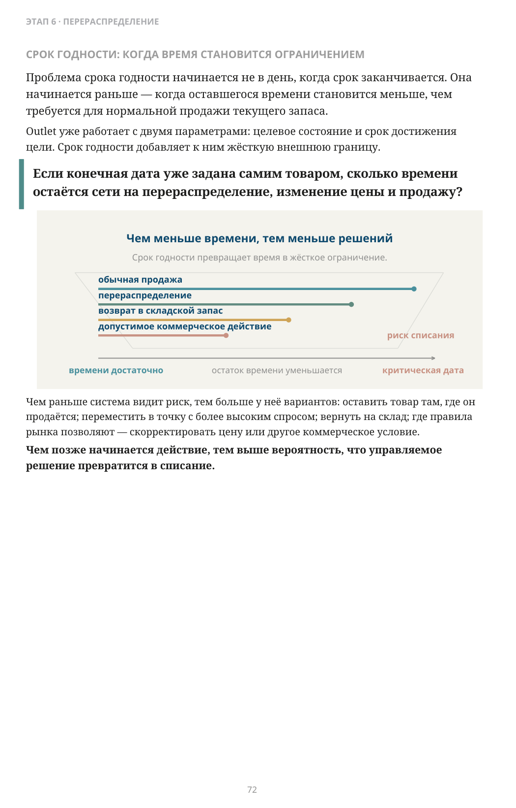
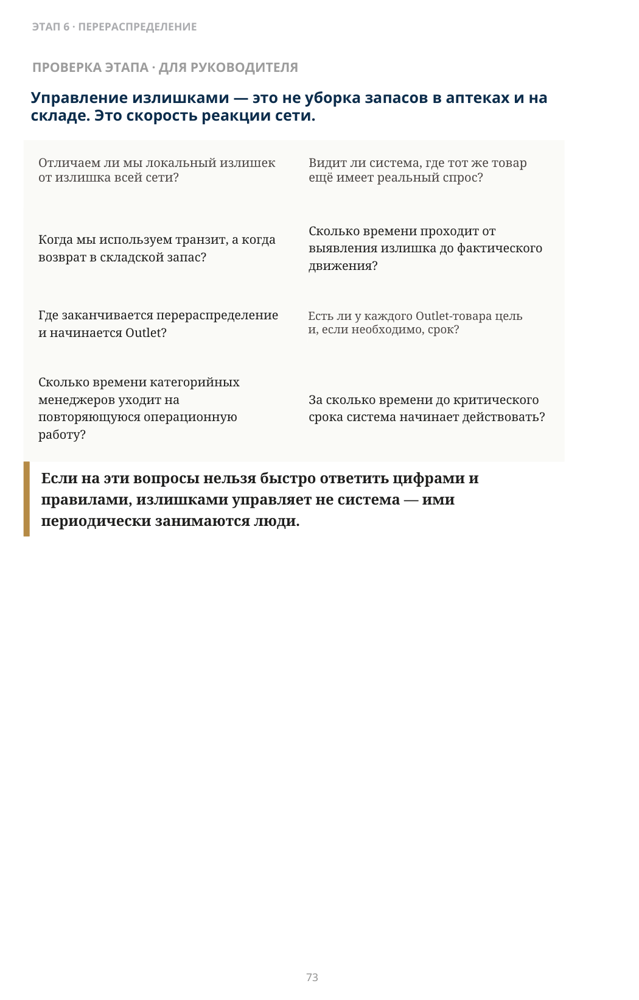

Когда запас становится излишком?
ЧАСТЬ II · ЭТАП 6
Перераспределение, управляемый вывод запаса (Outlet) и сроки годности
Когда товар становится излишком? В момент закупки? В момент поставки? Или тогда, когда запас перестаёт соответствовать текущему спросу конкретной аптеки?
Товар мог быть нужен аптеке вчера. Сегодня спрос уже другой.
Закончилась акция. Продажи замедлились. Изменилась структура спроса. Под коммерческие условия было поставлено больше товара. Ассортимент пересмотрели.
Поэтому излишек — это не обязательно ошибка закупки или размещения. Это запас, который стал слишком большим относительно текущего спроса и времени, за которое его ещё можно нормально продать.
Этот товар лишний для сети — или только для одной аптеки?
ЛОКАЛЬНЫЙ ИЗЛИШЕК ЕЩЁ НЕ ОЗНАЧАЕТ ИЗЛИШЕК СЕТИ
В одной аптеке продажи могут почти остановиться. В другой тот же товар продолжает продаваться нормально. Если смотреть на сеть как на систему, появляется возможность.
Если эта аптека не продаст товар вовремя, может ли его продать другая?
Физически товар в обоих режимах обычно проходит через склад. Разница в другом:
Что склад делает с коробкой?
Когда получатель уже понятен и важна скорость, транзит может быть проще. Когда сеть хочет сохранить свободу будущего решения, товар возвращается в складской запас, а направление определяет следующий реальный спрос.

Описание схемы
FIG_032: Что склад делает с коробкой?
Два режима движения через склад: транзит через склад не входит в складской запас, а возврат в складской запас увеличивает запас и затем снова распределяется по аптекам. Различие — в том, становится ли товар запасом склада.
Перераспределение не исправляет спрос. Оно исправляет использование уже купленного запаса.
Товар, который медленно продаётся в одной точке, получает ещё один шанс там, где спрос выше.
- уменьшить локальный излишек;
- снизить риск срока годности;
- улучшить наличие в другой аптеке;
- ускорить возврат капитала, связанного в медленном запасе.
Перераспределение не создаёт новый запас. Оно заставляет уже купленный запас работать там, где есть спрос.
Один из проектов автора
35 → 25
Не универсальная норма — доказательство механизма
дней запаса
регулярного перераспределения.
В одном из наших внедрений полностью автоматизированное перераспределение избыточных остатков снизило дни запаса примерно с 35 до 25.
Для меня здесь важнее механизм: когда сеть перестаёт ждать редкой ручной «генеральной уборки», излишек начинает двигаться раньше.
А что если перемещать уже некуда?
Перераспределение работает, пока где-то в сети есть нормальный спрос. Но если сеть сама решила, что товар должен уйти из активного ассортимента — вопрос меняется.
Не:
Куда его переместить?
А:
К какому состоянию должен прийти этот запас — и к какому сроку?
Здесь начинается режим управляемого вывода запаса — Outlet.
Outlet — это система, которая доводит выбранный запас до заданного состояния к заданному сроку.
0
остаток
0 к дате
к сроку
целевой уровень
к дате
Перераспределение и цена здесь становятся не отдельными кампаниями, а инструментами достижения цели. Для лекарственных препаратов возможность ценовых действий зависит от правил конкретного рынка.
Сколько управленческого времени компания готова тратить на товар, который уже решила вывести?
Примерно в 2017 году собственник косметической сети «Ламель» в Екатеринбурге попросил меня приехать.
По моему воспоминанию, в сети было около 120 магазинов и примерно 12 категорийных менеджеров. Собственник сказал, что уже два-три года пытался решить одну проблему — с консультантами и своей ИТ-командой.
Категорийные менеджеры тратили слишком много времени на распродажу остатков товаров, выводимых из ассортимента.
- смотреть остатки;
- перемещать товар;
- решать, какую скидку дать;
- проверять, что осталось;
- снова менять решение.
По оценке собственника и моему воспоминанию, на такую работу уходило примерно 20–40% времени категорийных менеджеров.
Деньги от более правильной распродажи были важны. Но собственника больше беспокоило другое:
Он хотел вернуть категорийных менеджеров к управлению категориями.
Цифры на странице относятся только к этому кейсу: это воспоминание автора и оценка собственника, а не отраслевой норматив.

Описание схемы
FIG_033: ОТ 20–40% ВРЕМЕНИ К ЦЕЛИ И ДАТЕ
Схема «до/после» показывает переход от множества промежуточных согласований и 20–40% времени к дате к более прямому управлению от цели и срока. Смысл — уменьшить число решений между задачей и критической датой.
Мы изменили саму роль человека в процессе.
Категорийный менеджер должен определить:
- какой товар переводится в Outlet;
- к какому состоянию должен прийти запас;
- к какой дате, если срок имеет значение.
Дальше система ведёт операционную работу:
перераспределяет товар, следит за остатком и предлагает следующую цену, чтобы двигаться к заданной цели.
По моему воспоминанию, после запуска ежедневный контроль со стороны логистики занимал порядка 10–15 минут в день — в основном нужно было подтвердить, устраивает ли следующая предложенная цена. Позже автоматизировали и часть этого контроля.
Человек не исчез из процесса — он поднялся на другой уровень принятия решений.
Решение «что выводим» остаётся у категории. Работа «как довести остаток до цели» переходит системе.
Именно в этом проекте для меня окончательно сформировался принцип: Outlet — не кампания скидок, а управление целью, сроком и траекторией запаса.
Проблема срока годности начинается не в день, когда срок заканчивается. Она начинается раньше — когда оставшегося времени становится меньше, чем требуется для нормальной продажи текущего запаса.
Outlet уже работает с двумя параметрами: целевое состояние и срок достижения цели. Срок годности добавляет к ним жёсткую внешнюю границу.
Если конечная дата уже задана самим товаром, сколько времени остаётся сети на перераспределение, изменение цены и продажу?
Чем раньше система видит риск, тем больше у неё вариантов: оставить товар там, где он продаётся; переместить в точку с более высоким спросом; вернуть на склад; где правила рынка позволяют — скорректировать цену или другое коммерческое условие. Чем позже начинается действие, тем выше вероятность, что управляемое решение превратится в списание.

Описание схемы
FIG_034: Чем меньше времени до критической даты, тем меньше решений
Горизонт времени сужается к критической дате: чем меньше остаётся времени, тем меньше доступно управленческих решений — от перераспределения и возврата к поставщику до ограниченных действий при риске списания.
ПРОВЕРКА ЭТАПА · ДЛЯ РУКОВОДИТЕЛЯ
Управление излишками — это не уборка запасов в аптеках и на складе. Это скорость реакции сети.
- Отличаем ли мы локальный излишек от излишка всей сети?
- Видит ли система, где тот же товар ещё имеет реальный спрос?
- Когда мы используем транзит, а когда возврат в складской запас?
- Сколько времени проходит от выявления излишка до фактического движения?
- Где заканчивается перераспределение и начинается Outlet?
- Есть ли у каждого Outlet-товара цель и, если необходимо, срок?
- Сколько времени категорийных менеджеров уходит на повторяющуюся операционную работу?
- За сколько времени до критического срока система начинает действовать?
Если на эти вопросы нельзя быстро ответить цифрами и правилами, излишками управляет не система — ими периодически занимаются люди.

Эта функция почти не меняет закупочную силу сети напрямую.
Она меняет другую форму силы — контроль над уже купленным запасом, капиталом и временем реакции.
Сеть управляет уже не только тем, сколько купить и куда привезти, но и тем, как быстро изменить судьбу уже купленного товара, если спрос изменился.
Капитал меньше зависит от локального изменения спроса в одной точке, а дефицитное управленческое внимание меньше расходуется на повторяющуюся операционную работу.
Но часть проблем с излишками начинается ещё раньше.
До заказа. До склада.
В момент, когда компания решает, какие товары вообще должны быть в ассортименте, какую потребность они закрывают и как соотносятся друг с другом.